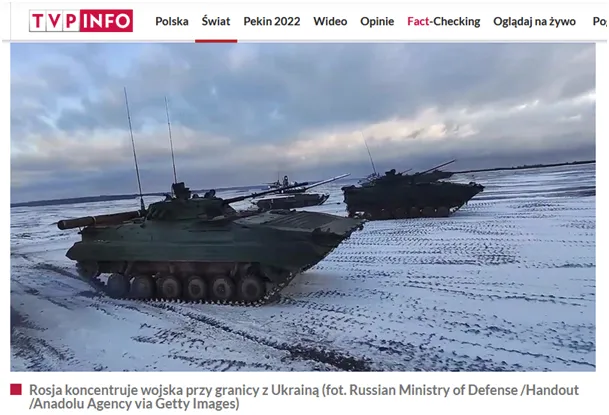
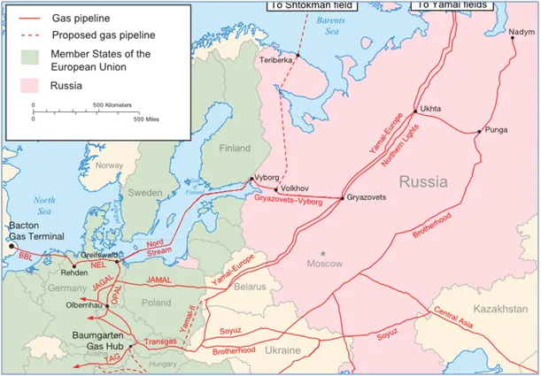
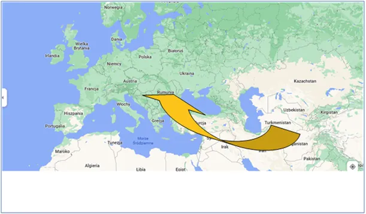

Wejdą ? Nie wejdą ? Kwestia za ile!
Po wielu miesiącach nieśmiało zajrzałem do TV, konkretnie do TVP Info. Wojna! Czołgi, żołnierze w lesie, marines co? na polskich lotniskach, prawie przegapiłem wojnę!

Nie wiem, czy mówili w TV o tym, że ruski gaz zamiast płynąć przez Polskę do Niemiec gazociągiem jamalskim płynie w drugą stronę... Nie żeby to było coś nowego, ale tym razem to proroctwo gazowników. Mieliśmy zawsze gaz z pierwszej ręki od Rosjan, ceny były jakieś. Teraz Rosjanie przez Bałtyk będą gaz tłoczyli do Niemiec a my kupujemy z niemiecką marżą, marża będzie słona, bo wystarczy, że będzie taniej niż za bardzo drogi gaz z USA i weźmiemy wszystko. Zapewne z jakimś zielonym certyfikatem po niemiecku. To żeśmy se pomachali szabelką.

Czy Rosjanie wejdą na Ukrainę? To wiedzą tylko Rosjanie, ale możemy spekulować. Czy Niemcy wtedy przestaną kupować z Rosji gaz? Nie! USA sobie wymyśliła ten scenariusz, że cała Europa ma się przestawić na ich najlepszy na świecie gaz łupkowy. Teoretycznie, całkiem niedawno Niemcy spłaciły wojenne odszkodowania dla USA i są już wolnym krajem, ale w praktyce Niemcy są okupowane przez USA a dokładnie przez NATO, którym rządzi USA. Armia niemiecka, gdy powstawała w latach 50-tych została całkowicie spleciona ze strukturami NATO i tak jest do dziś. Niemcy mogą w swej armii robić kolosalne przekręty albo wysłać wojsko do np. Afganistanu, ale w Europie są bezbronni.

Śmiało możemy sobie wyobrazić sytuację, że NATO w Europie walczy z Rosją przy użyciu niemieckiej armii a Niemcy kupują od Rosji surowce i np. broń. Podobnie było w czasie I Wojny Światowej. Niemcy przez Skandynawię kupowali surowce do produkcji amunicji od Brytyjczyków. Nie było w tym żadnej tajemnicy, potem Niemcy pod Verdun z tej broni zabijali setki tysięcy brytyjskich żołnierzy, tak się robi wielkie fortuny! Gdy potem było trzeba spłacać długi za tę amunicję Hitler powiedział, że on nie będzie płacił i na tej fali wygrał wybory. Co było dalej, wiecie.
Każda wojna zaczyna się i kończy na mapie. Obecnie Rosjanie domagają się wycofania zachodnich wpływów z Rumuni, Bułgarii i oczywiście z Ukrainy. Sukces USA po WW2 polegał na zahamowaniu rozwoju centrum świata jakim jest Eurazja i eksploatacji tych terenów z surowców lub korzystania z taniej siły roboczej i technologii. Np. za PRL polskie turbiny z Elbląga, najwyższej klasy, za bezcen szły na cały świat. Takich Elblągów na całym kontynencie były tysiące.
Obecnie Chiny chcą przywrócić wymianę w ramach Eurazji i blokowane przez USA na morzach wymyśliły Nowy Jedwabny Szlak. Przez dekady USA udawało się blokować ten pomysł np. poprzez destabilizacje w Afganistanie. Rosja będzie na Jedwabnym Szlaku korzystać i potrzebuje spokoju. Tak więc pytanie "czy wejdą" należy zastąpić pytaniem czy dadzą się sprowokować. Obecny spór, to walka o dominację na Morzu Czarnym. Dlatego Obawy Litwy czy Estonii są przedwczesne. Malutka Mołdawia i tzw. Naddniestrze, region między Mołdawią i Ukrainą kontrolowany przez Rosję będą wkrótce częściej wymieniane w mediach.
Gdy spojrzymy na mapie, gdzie leży Kazachstan to lepiej zrozumiemy dlaczego tam niedawno strzelano nocą do ludzi na ulicach. Podobne wieści przychodzą z samego środka Azji, z Tadżykistanu. Zawsze mnie to frapuje, że jako pierwsze o takich zajściach informacje podaje amerykańskie radio typu Radio Wolna Europa. Dziś zbyt wiele armii w Azji ma możliwość zatapiania lotniskowców aby amerykanie chcieli to sprawdzać. Moim zdaniem będzie deal i niegroźna ustawka. USA nie może otwierać drugiego frontu poza Pacyfikiem.
Paweł Klimczewski